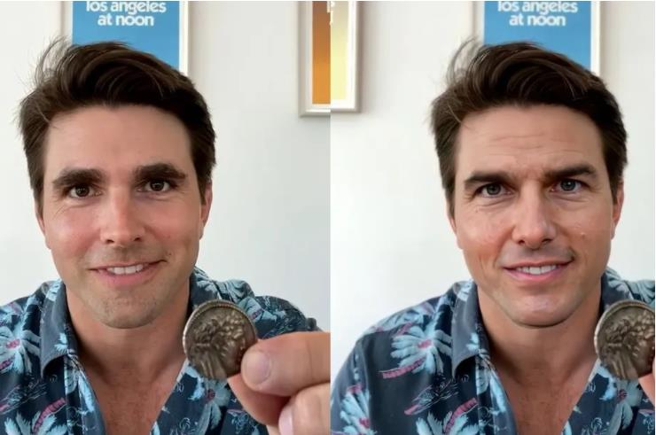
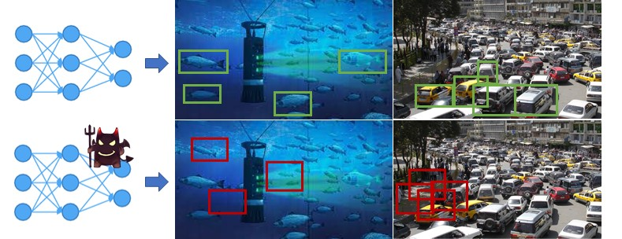

AI Security Group (AISec) is an interdisciplinary research group under the institute of Artificial Intelligence, Ocean University of China, led by Prof. Junyu Dong and Dr. Yuezun Li. Our group focuses on defending the newly raised security threats introduced by advanced Artificial Intelligence (AI) technologies, such as falsified multimedia (e.g., DeepFakes), the vulnerability of DNN models.
| The falsified multimedia (DeepFake) can mislead the public opinion by forging victim's activities that do not happen in reality, which will potientially raise the societal risk, e.g., making revenge porngraphic videos [Here] or inflammetory comments of public figures [Here]. | The vulnerability of DNN models can cause severe threats to safety-critical applications such as video survillence, computer vision task of on ground or under water scenario [Here]. |
|

An example: Tom Cruise impersonator (left) and the deepfake Tom Cruise (right) |

An example: Correct predictions (top) and false predictions (bottom) of underwater and car detection due to the vulnerability of DNN models |
@inproceedings{hu2021corneal,
author={Hu, Shu and Li, Yuezun and Lyu, Siwei},
title={Exposing GAN-generated Faces Using Inconsistent Corneal Specular Highlights},
booktitle={IEEE International Conference on Acoustics, Speech, and Signal Processing (ICASSP)},
year={2021}}
@inproceedings{sun2020landmarkbreaker,
author = {Pu Sun and Yuezun Li and Honggang Qi and Siwei Lyu},
title = {Landmark Breaker: Obstructing DeepFake By Disturbing Landmark Extraction},
booktitle= {IEEE International Workshop on Information Forensics and Security (WIFS)},
year = {2020}}
@inproceedings{li2020fastseg,
author = {Yuezun Li and Ao Luo and Siwei Lyu},
title = {Fast Portrait Segmentation with Highly Light-weight Network},
booktitle= {IEEE International Conference on Image Processing (ICIP)},
year = {2020}}
@inproceedings{Celeb_DF_cvpr20,
author = {Yuezun Li and Xin Yang and Pu Sun and Honggang Qi and Siwei Lyu},
title = {Celeb-DF: A Large-scale Challenging Dataset for DeepFake Forensics},
booktitle= {IEEE Conference on Computer Vision and Patten Recognition (CVPR)},
year = {2020}}
@inproceedings{li2019ibp,
author={Li, Yuezun and Bian, Xiao and Chang, Mingching and Lyu, Siwei},
title={Exploring the Vulnerability of Single Shot Module in Object Detectors via Imperceptible Background Patches},
booktitle={The British Machine Vision Conference (BMVC)},
year={2019}}
@inproceedings{li2019fwa,
author={Li, Yuezun and Lyu, Siwei},
title={Exposing DeepFake Videos By Detecting Face Warping Artifacts},
booktitle={IEEE International Conference on Computer Vision and Pattern Recognition Workshop (CVPRW)},
year={2019}}
@inproceedings{yang2019headpose,
author={Yang, Xin and Li, Yuezun and Lyu, Siwei},
title={Exposing GAN-synthesized Faces Using Landmark Locations},
booktitle={IEEE International Conference on Acoustics, Speech, and Signal Processing (ICASSP)},
year={2019}}
@inproceedings{li2018rap,
author={Li, Yuezun and Tian, Daniel and Chang, Mingching and Bian, Xiao and Lyu, Siwei},
title={Robust Adversarial Perturbation on Deep Proposal-based Models},
booktitle={BMVC},
year={2018}}
@inproceedings{li2018ictu,
title={In Ictu Oculi: Exposing AI Generated Fake Face Videos by Detecting Eye Blinking},
author={Li, Yuezun and Chang, Ming-Ching and Lyu, Siwei},
Booktitle={IEEE International Workshop on Information Forensics and Security (WIFS)},
year={2018}}